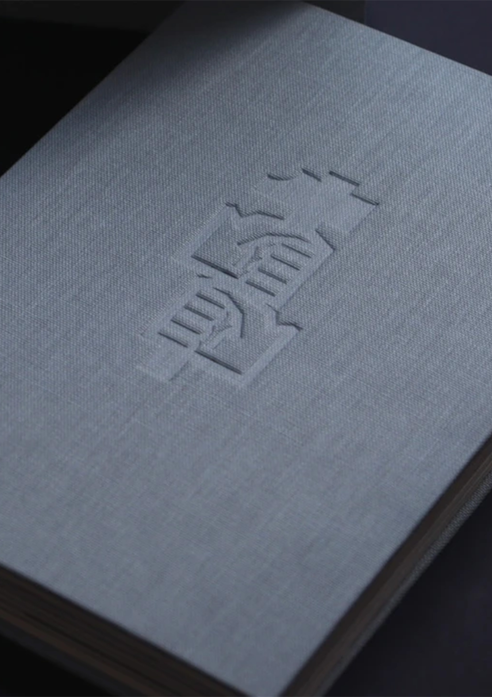

Unilabor - A new concrete perspective
An experimental editorial publication with an unpublished text by Alfredo Lopes, the author's great-uncle and ex-leisurer of the work cooperative, Unilabor. The text tells its internal perspective under an intimate contact of the beginning, middle and end of the community that was born from Geraldo de Barros' drawing board and from the “communitarian” ideals of Frei João Baptista. Not just a furniture factory with designs by Geraldo, but a working class community that lived in the hope of a more equal and fair tomorrow. The cooperative is seen as a fundamental reference in the design of Brazilian furniture, workers' self-management, modern art and collaborative design models. A simple and direct text, typed between the 1980s and 2000s, collides with the fluidity of a novel through an unprecedented account of the cooperative. Appropriating a literary rhythm, Brazilian neo-concrete, and experimentalism as a constructive basis for the graphic project that aims to give poetic meaning to the narrative. Exposing a new perspective of an important member, Alfredo. Where the singularity of the record tells a little more about the community, its internal organization, its creation process and, consequently, about the artist Geraldo de Barros. Where, for the first time, the artist is not seen as the only protagonist of this story. Thus revealing the sense of collaboration that existed in the initiative. Decentralizing the idea of Geraldo as the only creator and idealizer of the project.
/Book Design | 2022 Lead Designer/Editor/Curator/Author: Lucas DeMiranda Assistant Designer: Matheus Pacheco Photos: Thomas Mota
🏆 BRASIL DESIGN AWARD | BRONZE 🥉 / 2022 EDITORIAL DESIGN
